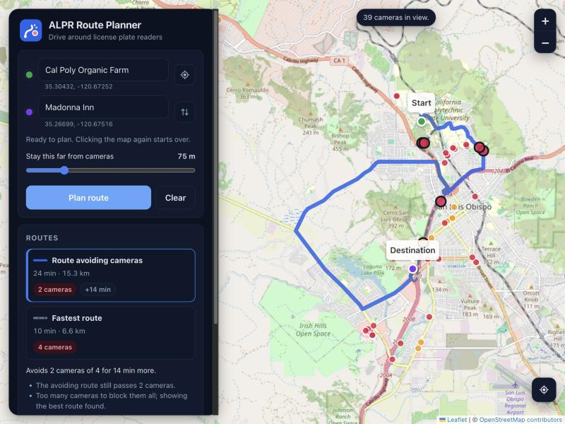
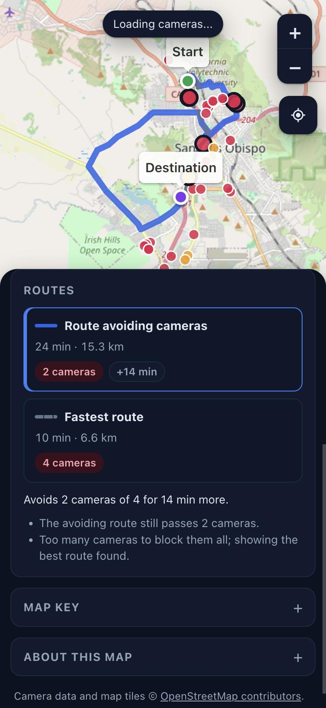

ALPR Route Planner


- When
- 2026
- Stack
- Node.js 22, plain JavaScript with no npm dependencies, Leaflet, OpenStreetMap (Overpass, Nominatim), Valhalla routing, Capacitor for Android
- Code
- github.com/fellobello/alpr-route-planner
What it does
- Shows ALPR cameras mapped in OpenStreetMap.
- Search for a start and destination, click the map, or use your location.
- Plans the fastest route and one that steers around cameras, with the camera count and extra time for each. You choose how close counts as passing a camera.
Interesting parts
Works when the data service doesn't
The public camera service (Overpass) is often slow or down. Camera data is cached by map tile and saved to disk, so areas seen before load instantly. Out-of-date tiles are still shown while a refresh runs in the background, and backup mirrors are tried in turn.
One codebase, web and Android
The API logic has no HTTP in it, so the same code runs in the Node server and inside the Android app. The phone app plans routes on the device and needs no server.
Honest about its limits
Camera locations are crowd-sourced and incomplete. A route that avoids every mapped camera can still pass unmapped ones.
How it was built
Roughcut built the first version from one line: "google maps but you can see flock cameras and plan routes around them." I then took it to a 1.0 release: the redesign, place search, offline-tolerant camera data and the Android app. The code is AI-written from my direction, with about 600 tests that never touch the network.